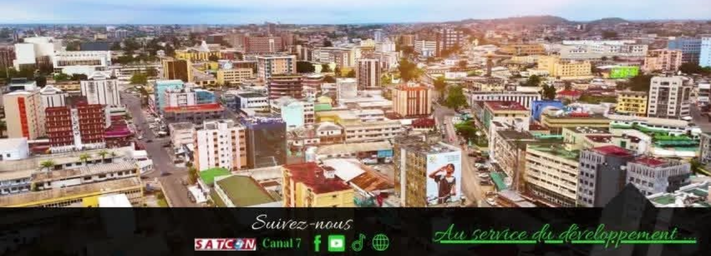
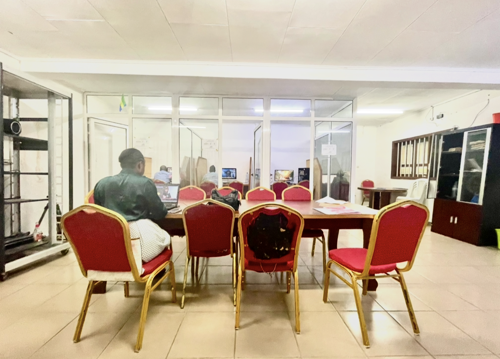
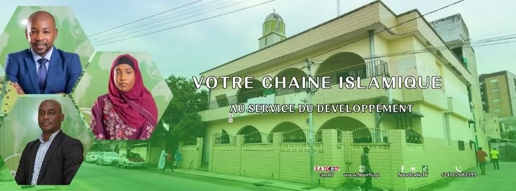

NOUR TV Gabon
Première Chaîne Islamique du Gabon
Bienvenue sur le site web de Radio et Télévision NOUR
Votre information, où que vous soyez
AU SERVICE DU DÉVELOPPEMENT

Première Chaîne Islamique du Gabon
Votre information, où que vous soyez
AU SERVICE DU DÉVELOPPEMENT


